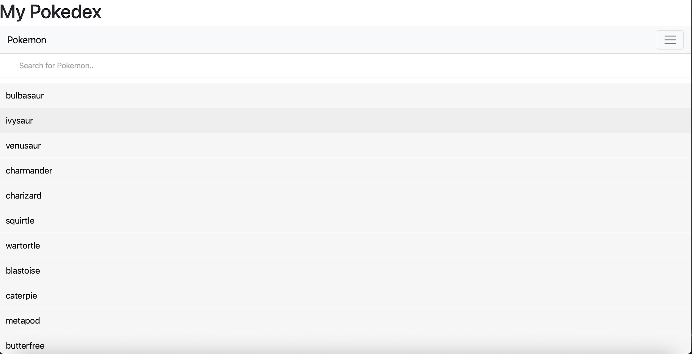
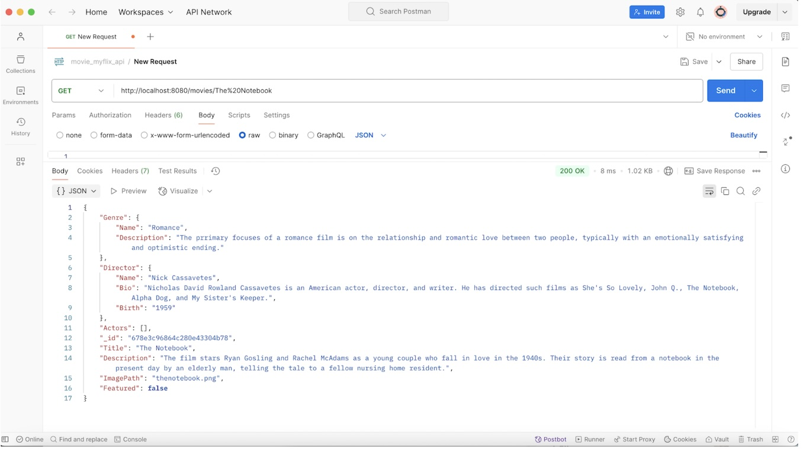
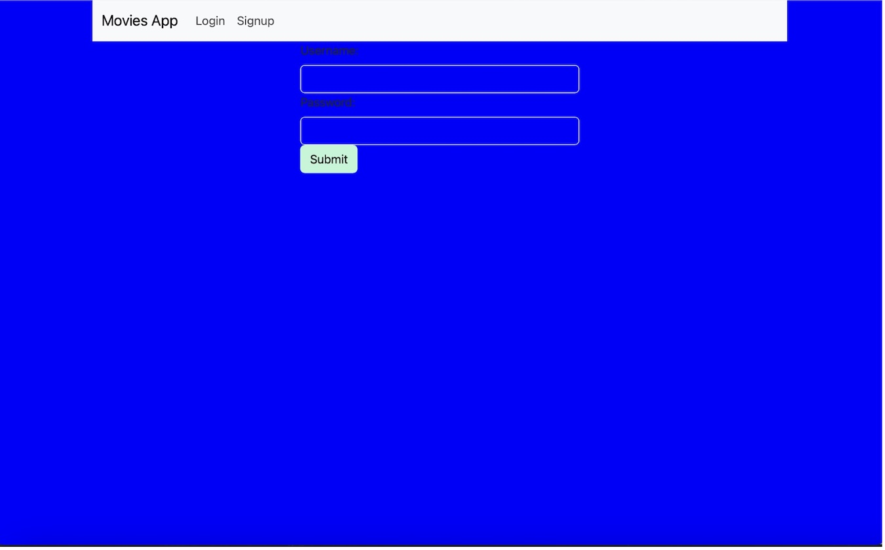
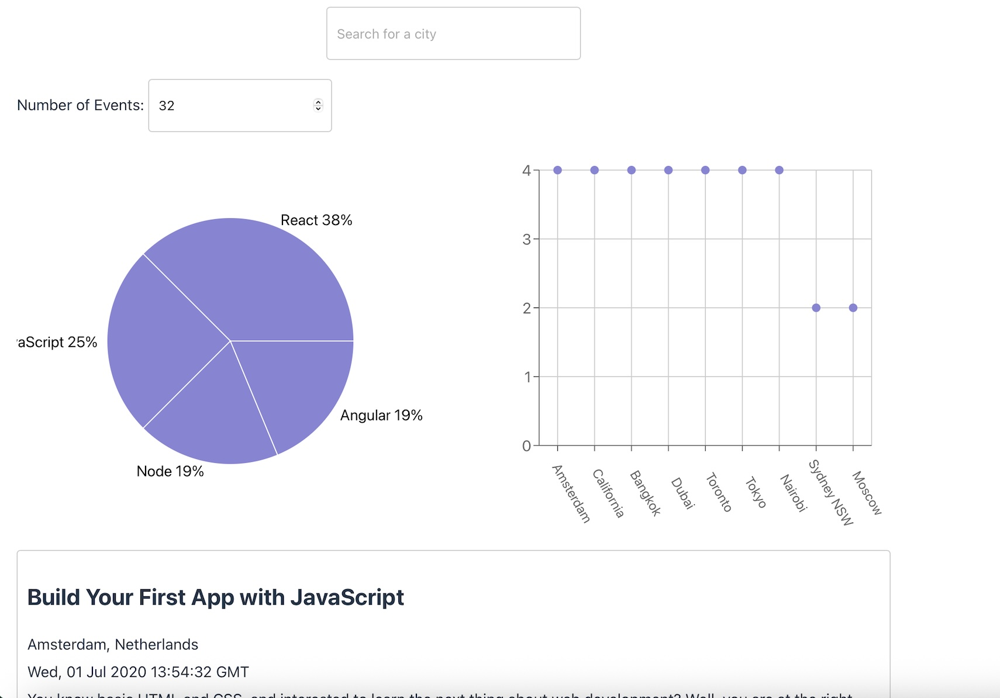
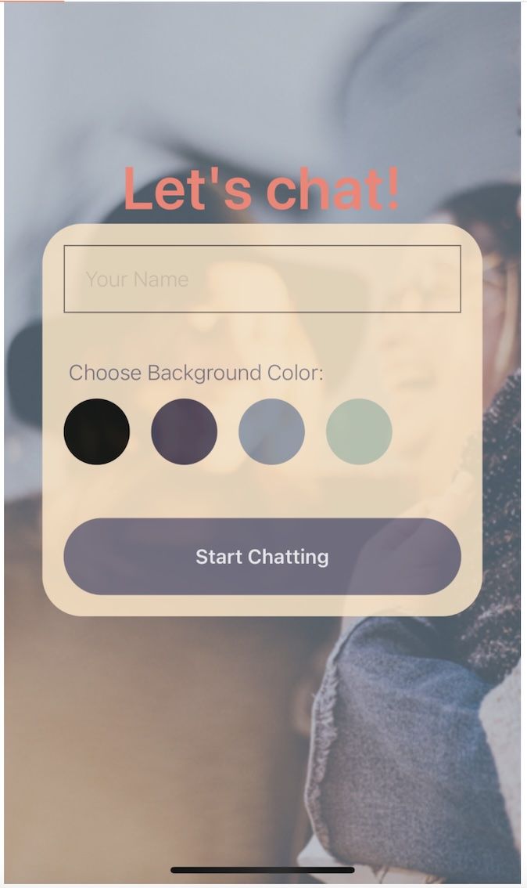

Examples of my work
Pokedex App
This project gave me great experience in writing JavaScript code and making calls to an external API to display information about different Pokemons. In addition to JavaScript, I also used HTML and CSS to style the Pokedex.

See project on GitHub Link to the live appAPI for the MyFlix app
This was possibly my favourite task! This is the API created from scratch which was used to store data about movies for the MyFlix apps. The API was created using Node.js and Express. The Database was built with MongoDB, The business logic modelled with Mongoose and tested in Postman.

See project on GitHub Link to the live appMyFlix app - React version!
This is the client side app for the MyFlix API which I also created! There are two versions of myFlix: one built with React and one with Angular. MyFlix is a web app that allows users to explore information regarding movies - for example movie titles, directors and genres. I gained experience using React to create this website, as well as the build tool parcel and hosting platform Netlify.

See project on GitHub Link to the live appMeet app
The Meet app lets users discover upcoming events about various coding languages in different cities! When writing this app, I learnt about different testing methods, as well as giving me further practise with React, and external APIs.

See project on GitHub Link to the live appLet's chat!
My Chat app is an easy to use and effective app that can be used to send and receive chat messages in real time. Chat messages can be simply text messages, or include photos or geolocations. In this project, I gained experience with React Native for mobile apps and Expo Go.

See project on GitHubMyFlix app - Angular edition!
After creating the client side app for the MyFlix API in React, I also gained experience creating a frontend app in Angular and designing with Angular Material.
See project on GitHub